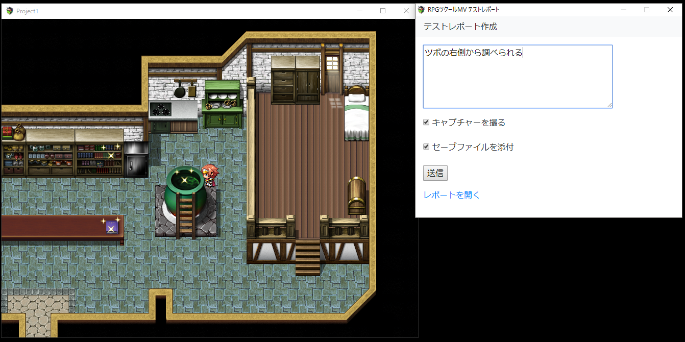
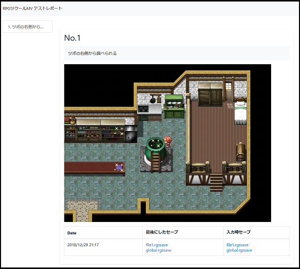

テストのレポートを作るプラグイン
テストのレポート
ゲームのテストをしたときにバグや良かったところとか報告をします。
しかし、画面のキャプチャをしたりセーブファイルを添付したり、結構大変ですし、そういう作業をしながらでは、ゲームに集中できません。
そこでレポート作成を楽にできるプラグインを制作しました。
レポート作成ウィンドウ
ゲーム本体側に影響を与えず、すぐにレポートを書けることを重視して、レポート作成画面は別ウィンドウで自動起動します。
以下の画面のような構成です。

レポートのHTML
レポートは以下の画像のようにHTMLで出力されます。

以下の2つのセーブが添付されます。
- 最後にプレイヤーが実際にセーブした時点のセーブファイル
- レポートを送信した時点のセーブファイル
2に関しては場合によっては正しくないセーブファイルになります。
例えば、イベント途中でレポートを書いた場合、イベントを途中まで実行しているので中途半端なデータになりかねません。
使用するときは注意が必要です。
使い方
動作バージョン: RPGツクールMV1.6以上
以下よりzipをダウンロードし、解凍します。解凍した中身のTestReportフォルダとTestReport.jsの両方をjs/pluginsフォルダに配置します。
https://github.com/kido0617/rpgmakerMV-plugin/raw/master/TestReportSet.zip
プラグインをONにすれば起動時にウィンドウが表示されます。
作成されたレポートはエディタだとプロジェクトファイル直下のreportフォルダに、デプロイ後だとwwwフォルダ内に作られます。
制限事項など
書いているつもりがレポート生成されてなかったら大変なので、テスト時に「レポートを開く」リンクからレポートが正常に生成されているか確認してください。
レポートを削除するときはreportフォルダを削除してください。
製品リリース時に残らないよう気をつけてください。
ライセンス
Released under the MIT license
フォルダ内のbootstrap.min.cssはMITライセンスによりTwitter社が配布しています。https://github.com/twbs/bootstrap/blob/v4.1.3/LICENSE